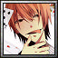

Season 1 archive · Go to active Season 2 →
← All heroesHero statistics · Season 1
The Honored One
FSA MCB · Recorded ranked matches
Recorded picks5
Win rate20%
Avg K / D / A36.0 / 46.8 / 13.0
Avg damage dealt260.6k
Avg APM129
Players on this hero
Most picks first| # | PLAYER | PICKS | WIN RATE | AVG K / D / A |
|---|---|---|---|---|
| 1 |  nazarian ロズウェル | 2 | 50% | 42.5 / 43.0 / 13.0 |
| 2 | d4vd ロロノア・ゾロ | 1 | 0% | 28.0 / 55.0 / 13.0 |
| 3 | sakiashizawa 平和島 静雄 | 1 | 0% | 51.0 / 41.0 / 14.0 |
| 4 | ximperial Seha Lee 2 | 1 | 0% | 16.0 / 52.0 / 12.0 |
Recent matches
LOSS70:35
MCB #2000142
10 Oct 2026 · 18:16 WIB
29.0 / 40.0 / 15.0View match →
LOSS64:54
MCB #2000106
03 Oct 2026 · 19:13 WIB
51.0 / 41.0 / 14.0View match →
LOSS49:42
MCB #2000080
15 Sep 2026 · 01:25 WIB
16.0 / 52.0 / 12.0View match →
WIN63:22
MCB #2000072
13 Sep 2026 · 04:06 WIB
56.0 / 46.0 / 11.0View match →
LOSS61:09
MCB #2000001
27 Aug 2026 · 01:01 WIB
28.0 / 55.0 / 13.0View match →